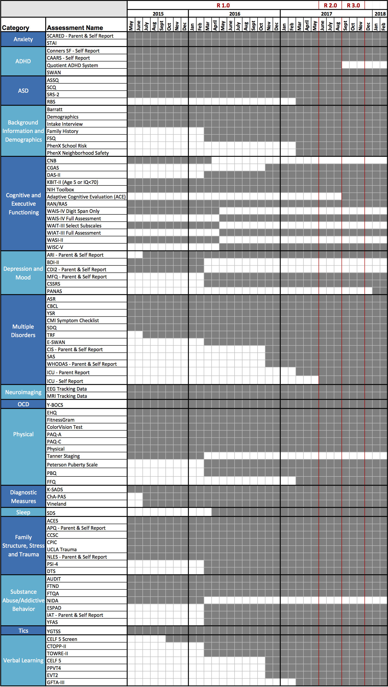

Assessments¶

HBN Diagnostic Tools¶
For a subset of psychiatric disorders, specific follow-up assessments are completed, as indicated for additional clinical characterization beyond the KSADS (e.g., Autism Diagnostic Observation Schedule [ADOS] (Lord et al. 2012) for suspected autism, Clinical Evaluation of Language Fundamentals [CELF] (Semel et al. 1995) for suspected language disorder). These targeted supplemental diagnostic assessments are not administered to individuals without a suspicion of the presence of clinically significant illness in the corresponding domain, due to the low likelihood of meaningful variation in most individuals.

HBN Protocol Timeline¶
The following table is a timeline of changes to the HBN assessment protocol.
Behavior Monitoring Technologies¶
Behavior monitoring technologies have the potential to help infer internal states of participants during assessments. Voice analysis stands out as particularly promising, given its increasing application in psychiatry (e.g., to assess mood and anxiety), in neurology (e.g., to assess motor function in populations such as those affected by Parkinson’s disease) and in developmental studies (e.g., to assess pubertal stage). The ease with which one can record audio samples in a controlled setting is particularly appealing. Among sensor-based wearable devices, accelerometer-based actigraphy is a promising means of monitoring behavior related to movement and sleep. For participants in Phase III, the collection of audio and video recordings have begun; actigraphy data collection is about to be implemented, as of July 2017.
Voice Recording: During the administration of all assessments and interviews, audio recordings are being collected using a portable Sony ICD-UX 533 digital voice recorder. Additionally, while in the MRI scanner, participants view an animated emotionally evocative four-minute film, titled “The Present”; immediately after coming out of the scanner, participants are prompted to narrate the story in their own words and answer a series of perspective-taking questions that are related to the content of the film. During this narration and question answering session high-fidelity audio recordings are collected with a Rode NT1 cardioid condenser microphone. Additionally, high-definition video of their face and upper body is collected simultaneously with a Canon XC15 digital camcorder. The audio recordings enable voice and speech analysis and the video recordings are envisioned to be useful for facial expression analyses.
Actigraphy: Plans are underway to provide each participant a wrist-worn ActiGraph wGT3X-BT to monitor movement throughout the day and night. Participants will be requested to wear the device every day for up to one month. The device will be recharged and its data downloaded during each visit.

- Home
- Link to Manuscript
- Project Plan
- Data Release Timeline
- Release Notes
- Fixes and Updates
- Inclusion/Exclusion Criteria
- Recruitment
- Participant Schedule
- EEG Protocol
- MRI Protocol
- Assessments
- Protocol Timeline
- Behavior Monitoring Technologies
- Sample Characteristics
- Neuroimaging Data Access
- Phenotypic Data Access
- Data Quality
- Citation of Data Usage
- Support